Modellazione 3D · Tecniche di animazione digitale
Storia della CGI: prospettiva o simulazione
Due genealogie della computer grafica 3D. Per Lev Manovich è l'ultimo capitolo della storia della prospettiva; per Jacob Gaboury nasce come simulazione di oggetti, e l'immagine è solo una delle sue uscite.
Citazioni in lingua originale, con traduzione di servizio. Frecce ← → per passare da un blocco all'altro, clic su un'immagine per ingrandirla.
Due storie del 3D
Gli stessi fatti, le stesse fonti, due conclusioni opposte. Gaboury scrive dopo Manovich e ne discute la tesi.
Lev Manovich: eredità della prospettiva
Mosca, 1960. Teorico dei nuovi media, animatore 3D negli anni Ottanta. Saggi 1991-1999; Il linguaggio dei nuovi media, 2001.
Prospettiva, macchine di Dürer, fotografia, radar, computer: la stessa operazione, sempre più automatica.
«By automating perspectival imaging digital computers completed the process that began in the Renaissance.»
Automatizzando l'immagine prospettica, i computer digitali hanno completato il processo iniziato nel Rinascimento.
Lev Manovich, The Mapping of Space, 1993
Jacob Gaboury: immagine-oggetto
Storico dei media, Università della California a Berkeley. Hidden Surface Problems, 2015; Image Objects, 2021.
Il 3D nasce come teoria degli oggetti. La prospettiva vi entra quasi per caso; il render è una delle sue uscite.
«The computer is not a visual medium. We might argue it is primarily mathematical, or perhaps electrical, but it is not in the first instance concerned with questions of vision or image.»
Il computer non è un medium visivo. Si potrebbe dire che è anzitutto matematico, o forse elettrico, ma non riguarda in primo luogo la visione o l'immagine.
Jacob Gaboury, Hidden Surface Problems, 2015, p. 40
1Le tesi di partenza
Quattro autori precedenti, citati da entrambi.
Erwin Panofsky, La prospettiva come forma simbolica
Storico dell'arte, fondatore dell'iconologia. La prospettiva non riproduce la visione: è una costruzione storica, che assume come norma un occhio solo e immobile. Il Rinascimento inventa uno spazio «sistematico», infinito e omogeneo, che esiste prima degli oggetti. Per Manovich è lo spazio vuoto con cui si apre un programma 3D.
William Ivins, On the Rationalization of Sight
Curatore delle stampe al Metropolitan Museum di New York. La prospettiva come strumento di misura, non come stile. La definizione è ripresa sia da Manovich sia da Gaboury.
«a practical means for securing a rigorous two-way or reciprocal, metrical relationship between the shapes of objects as definitely located in space and their representations»
Un mezzo pratico per assicurare una relazione metrica rigorosa, nei due sensi, tra le forme degli oggetti collocati nello spazio e le loro rappresentazioni.
William Ivins, 1938, citato in Manovich, 1993
Per Ivins è «the most important event of the Renaissance».
Jacques Lacan, Seminario XI
Psicoanalista francese. La frase è il perno del disaccordo: Manovich e Gaboury la citano entrambi.
«what is an issue in geometric perspective is simply the mapping of space, not sight»
Nella prospettiva geometrica è in gioco soltanto la mappatura dello spazio, non la vista.
Jacques Lacan, citato in Manovich, 1993, e in Gaboury, 2015 e 2021
Bruno Latour, Visualisation and Cognition: Drawing Things Together
Sociologo della scienza. Riprende Ivins: un disegno in prospettiva è un «immutable mobile», un oggetto che viaggia senza deformarsi. Una chiesa disegnata a Roma si ricostruisce a Londra. Reale e immaginario hanno la stessa geometria, e le due vie diventano «a four-lane freeway».
Per Manovich ne segue che la prospettiva non serve solo a rappresentare la realtà, ma a controllarla a distanza.
2La prospettiva come misura la genealogia di Manovich
La funzione della vista che la modernità isola e automatizza.
«visual nominalism -- the use of vision to capture the identity of individual objects and spaces by recording distances and shapes»
Nominalismo visivo: l'uso della vista per fissare l'identità di singoli oggetti e spazi, registrandone distanze e forme.
Lev Manovich, The Mapping of Space, 1993
Albrecht Dürer, macchine prospettiche
Nell'Underweysung der Messung il disegno in prospettiva è affidato a un dispositivo: una griglia tesa tra l'occhio e il soggetto, un filo come raggio visivo. Seguono camera obscura e camera lucida (1806): l'immagine si forma da sola, ma va ricalcata.
Albrecht Meydenbauer, la fotogrammetria · Nadar, la foto dal pallone
Meydenbauer, architetto prussiano, rischia di cadere dalla facciata della cattedrale di Wetzlar e propone di misurare gli edifici dalle fotografie. Nel 1885 nasce a Berlino il Regio istituto prussiano per la misurazione fotografica. Nello stesso 1858 Nadar fotografa dall'alto, da un pallone sopra Bièvre.
«not everything, but many things, better [...] than on the spot»
Non tutto, ma molte cose si vedono meglio [nella misurazione in scala] che sul posto.
Meydenbauer, citato in Manovich, 1993
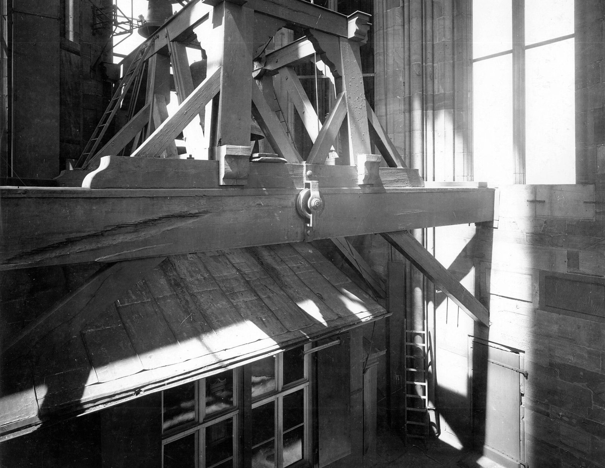
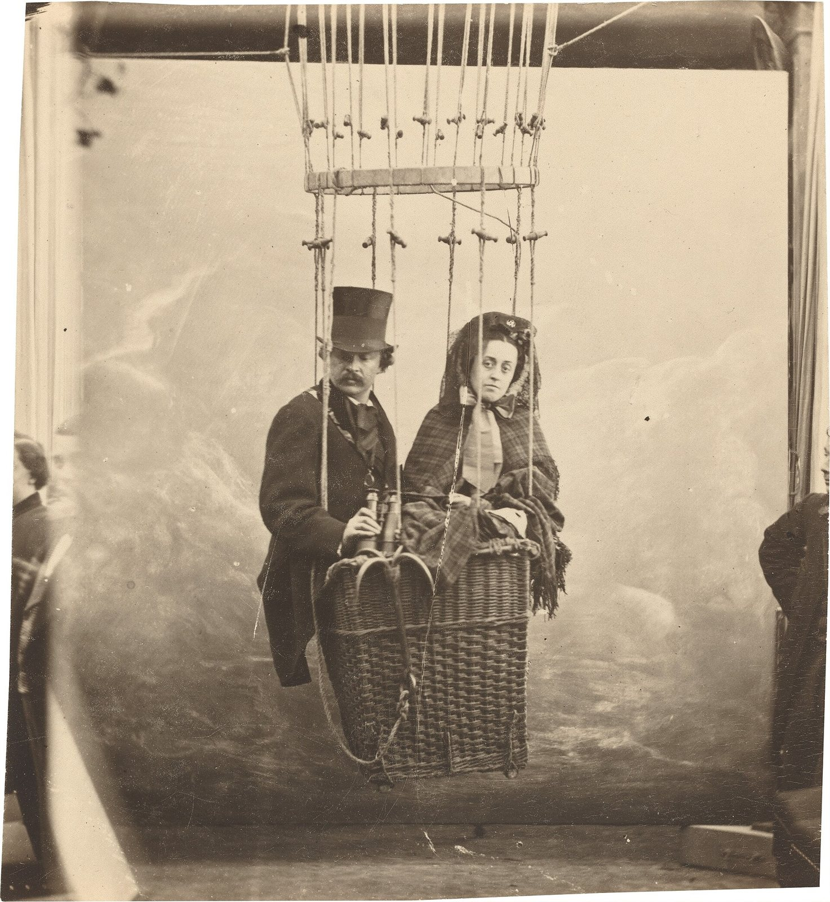
Il radar: vedere senza occhi
Per Manovich l'esempio più chiaro di razionalizzazione della vista nel Novecento. Del mondo restano solo le posizioni, in tempo reale, su tutto lo spettro elettromagnetico.
«All it sees and all it shows are the positions of objects, 3-D coordinates of points in space [...]. Color, texture, even shape are disregarded.»
Tutto ciò che vede e mostra sono le posizioni degli oggetti, coordinate 3D di punti nello spazio. Colore, texture, perfino la forma vengono ignorati.
Lev Manovich, The Mapping of Space, 1993
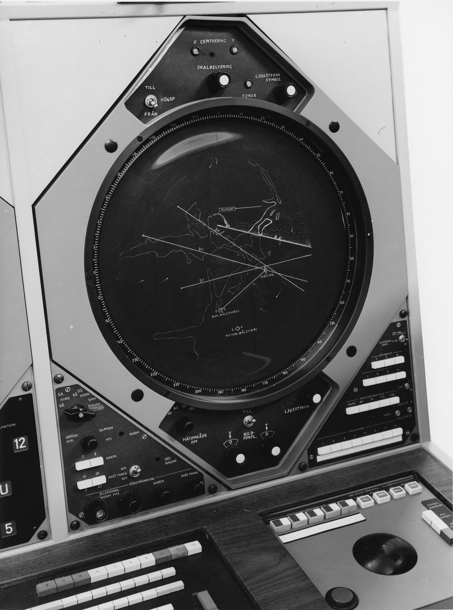
La guerra del Golfo
Il punto di partenza di The Mapping of Space: in televisione, le immagini con cui la guerra viene fatta. Telecamere a infrarossi sugli aerei, telecamere sulle armi a guida laser.
«More often, in a strange case of identification, we witnessed what was "seen" by a machine, a bomb, or a missile.»
Più spesso, in uno strano caso di identificazione, assistevamo a ciò che era «visto» da una macchina, una bomba o un missile.
Lev Manovich, The Mapping of Space, 1993
3Gli schermi
Il computer non parte da un'immagine: deve calcolarla e tenerla in memoria. I primi schermi vengono da radar e oscilloscopi.
Manchester, il tubo Williams-Kilburn
Il primo schermo è una memoria: i puntini sono i bit. Di solito restava coperto. Immagine e dato coincidono.
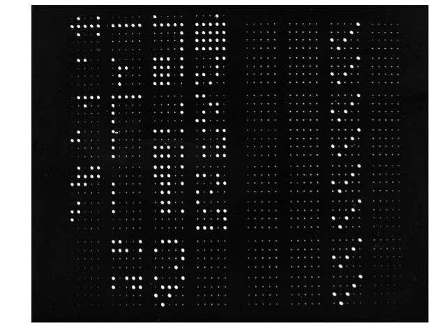
SAGE, la difesa aerea degli Stati Uniti
Computer, radar e penna ottica. L'operatore indica sullo schermo l'aereo da intercettare.
Manovich
Nasce lo schermo interattivo, ultimo stadio dopo lo schermo classico, quello dinamico e quello in tempo reale.
«Rather than acting solely as a means to display an image of reality, the screen became the vehicle for directly affecting reality.»
Lo schermo diventa il mezzo per agire direttamente sulla realtà. Archeology of a Computer Screen, 1995
Gaboury
La grafica è ancora rappresentazione: un aereo nemico è un simbolo su una mappa bidimensionale, che chiede una risposta all'operatore.
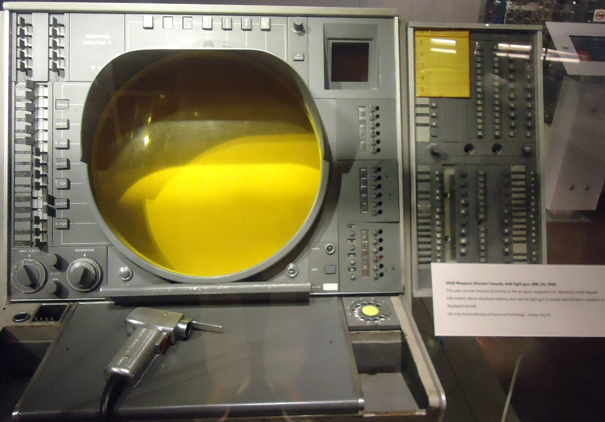
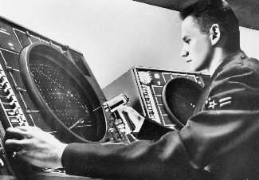
J. C. R. Licklider, Man-Computer Symbiosis
Psicologo, dal 1962 primo direttore dell'ufficio informatico dell'ARPA, l'agenzia di ricerca del Pentagono. Uomo e macchina accoppiati come il fico e l'insetto che lo impollina, con una superficie su cui disegnare insieme.
«the resulting partnership will think as no human brain has ever thought»
La collaborazione che ne risulterà penserà come nessun cervello umano ha mai pensato.
J. C. R. Licklider, Man-Computer Symbiosis, 1960
Ivan Sutherland, Sketchpad
Tesi di dottorato al MIT, sul TX-2 del Lincoln Laboratory. Primo programma di disegno interattivo con penna ottica, costruito a oggetti. Nel 1964 Sutherland succede a Licklider all'ARPA e finanzia la grafica.
«An ability to construct, manipulate and observe complex pictures of computed phenomena may radically change our ability to grasp complex ideas. [...] What we need now are additional ways to couple computers to humans through drawings.»
Poter costruire, manipolare e osservare immagini complesse di fenomeni calcolati può cambiare radicalmente la capacità di afferrare idee complesse. Servono altri modi per accoppiare computer e esseri umani attraverso i disegni.
Ivan Sutherland, programma ARPA per la computer grafica, 1965, citato in Gaboury, 2021
Manovich
Cambiare l'immagine significa cambiare i dati in memoria. La novità è l'interattività, non la prospettiva.
«This development was more revolutionary than automation of perspective construction per se.» (1993)
Gaboury
Con i sistemi a oggetti, da Sketchpad all'interfaccia dello Xerox Alto, «computing is transformed from a process into a medium».
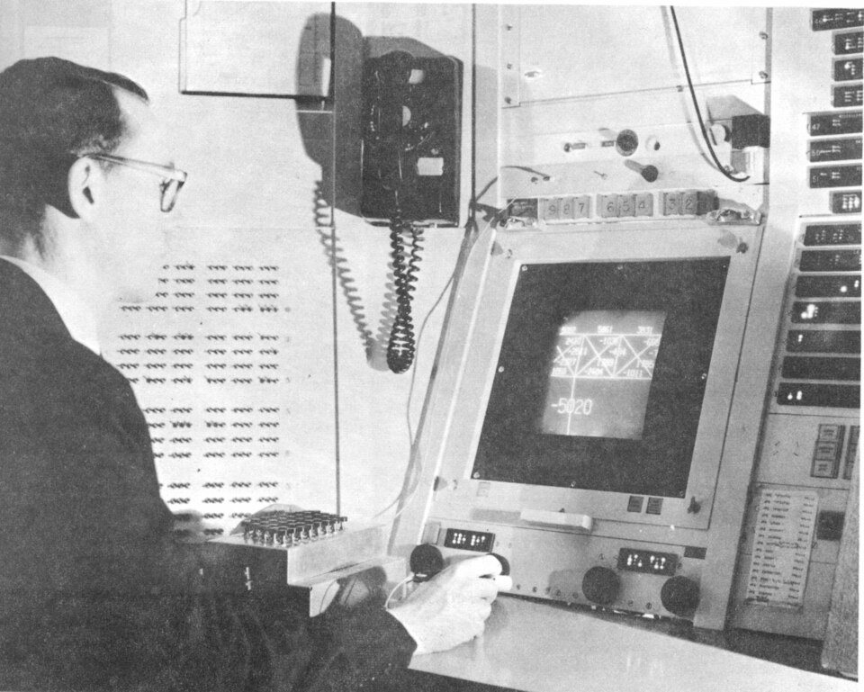
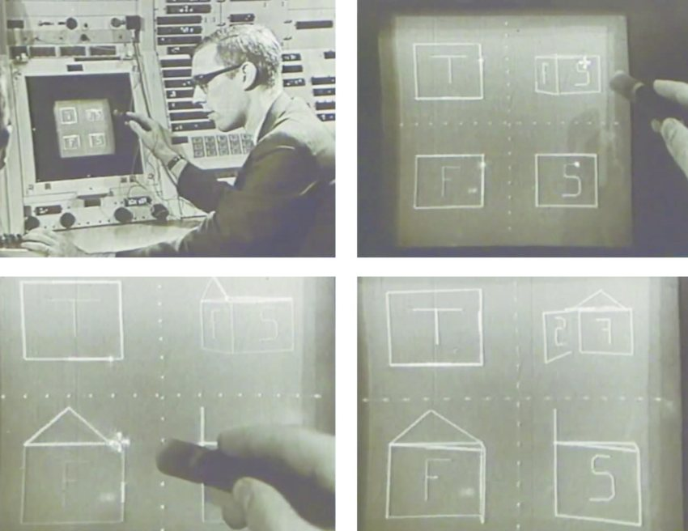
41963, Lawrence Roberts: lo stesso caso, due letture
Machine Perception of Three-Dimensional Solids, tesi al MIT. Il primo programma con proiezione prospettica 3D: ricava solidi da una sola fotografia.
Manovich: continuità
Roberts prende la matematica dai manuali tedeschi di geometria prospettica del primo Ottocento. Il nuovo nasce dal vecchio.
«perspectival drawing has always been a step-by-step procedure, an algorithm»
Il disegno prospettico è sempre stato una procedura a passi, un algoritmo. 1993
William J. Mitchell, architetto e teorico dell'immagine digitale al MIT, citato con approvazione: un evento «as momentous, in its way, as Brunelleschi's perspective demonstration».
Gaboury: la prospettiva entra di contrabbando
Lo scopo era la visione artificiale: riconoscere, non modellare. La prospettiva arriva con la fotografia.
«Roberts's use of perspective projection is largely incidental to the program's objectives, creeping in under the guise of an earlier visual form.»
L'uso della proiezione prospettica è in gran parte accessorio rispetto agli scopi del programma: si insinua sotto le spoglie di una forma visiva precedente. 2015, p. 47; 2021
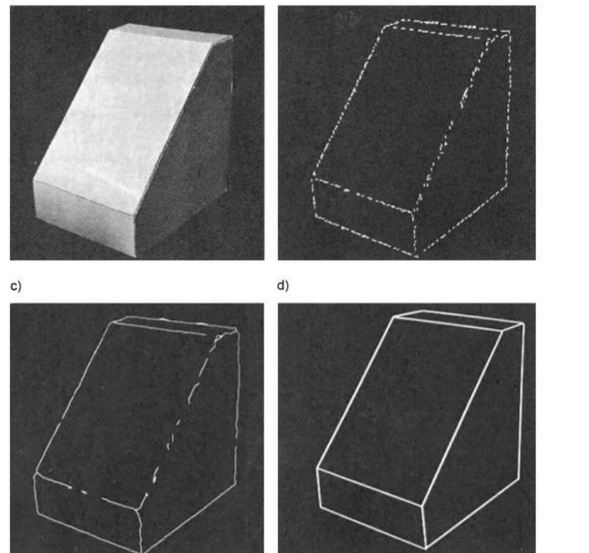
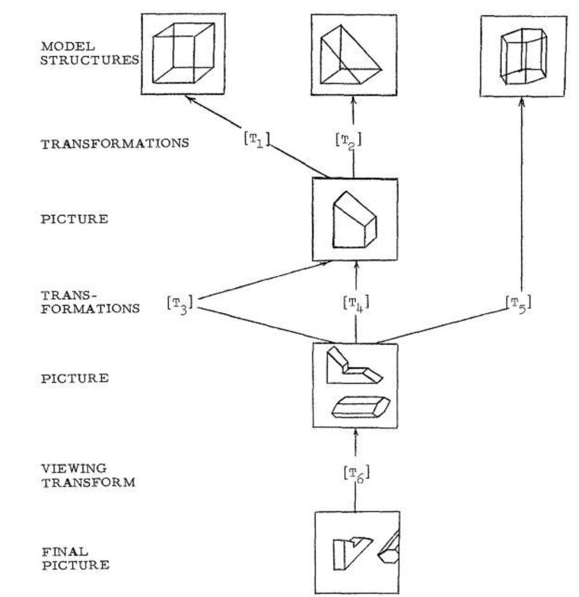
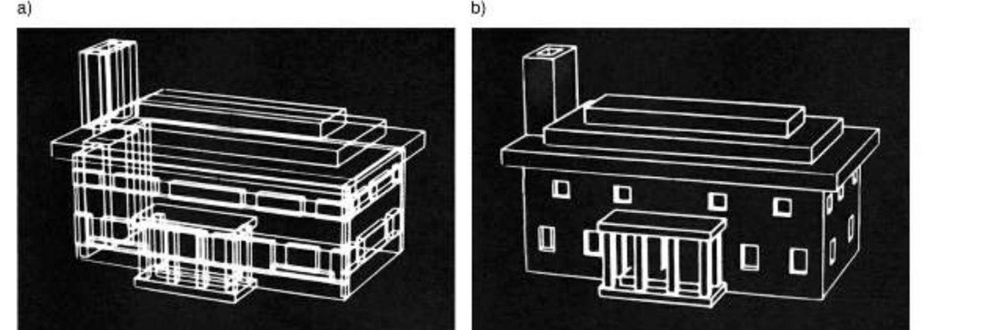
51964, William Fetter: Boeing Man
Alla Boeing, una figura in wireframe con sette articolazioni, sui dati del «50° percentile» dei piloti, per progettare la cabina del 747. Il termine computer graphics è formalizzato nel 1960 da Verne Hudson, alla Boeing.
Manovich
I film della Boeing non sono ancora automatici: il computer stampa 24 disegni al secondo, un artista li colora a mano, si filmano al tavolo di animazione. La prima computer grafica in movimento è una catena di animazione tradizionale.
Gaboury
«While the SAGE system treated graphics as images that visually represent numerical data to its operators, Fetter used graphics as a medium for the simulation of graphical objects.»
SAGE trattava la grafica come immagini che rappresentano dati numerici; Fetter la usa come medium per simulare oggetti grafici. 2021
«It is as much a theory of the world as it is an image of it, and in the subsequent decades that theory would be made actionable.»
È una teoria del mondo quanto un'immagine del mondo, e nei decenni successivi quella teoria sarebbe stata resa operativa.
Jacob Gaboury, Image Objects, 2021
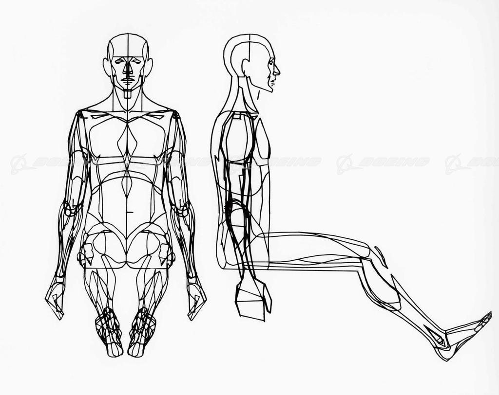
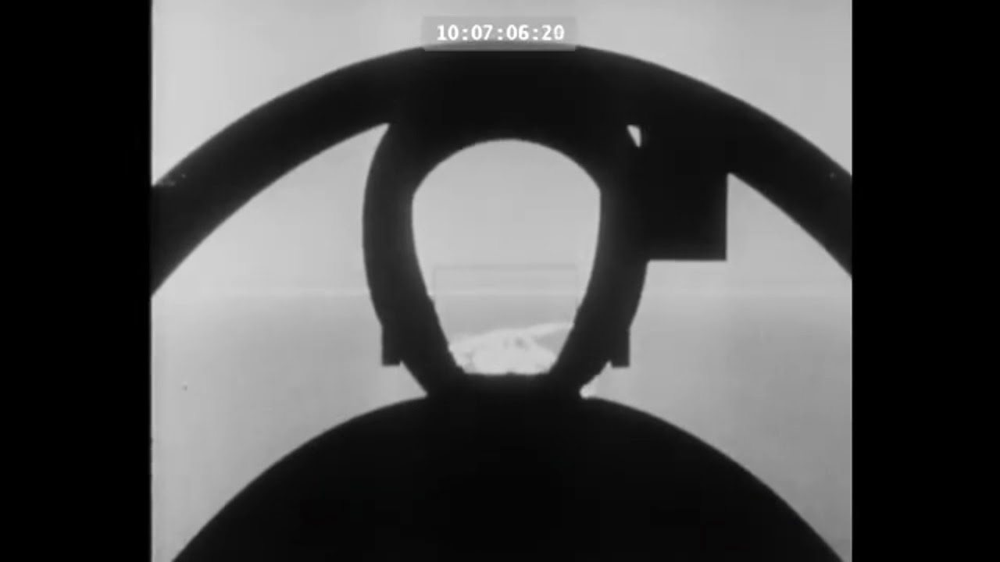
6Utah, 1965-1979: vedere togliendo
David Evans dirige il programma di informatica dal 1965, con un contratto ARPA. Sutherland arriva nel 1968; insieme fondano Evans & Sutherland. Tra gli studenti, i fondatori di Pixar, Adobe, Silicon Graphics, Atari.
Il programma di Evans
Per arrivare a immagini simili a fotografie: mostrare solo le superfici visibili; ombreggiarle secondo la luce; trovare un modello per superfici di forma qualsiasi. Per Gaboury la prospettiva non è nella lista.
Il problema delle superfici nascoste
Una scena esiste per intero come dati, retro compreso, prima di essere vista. Per imitare la percezione bisogna calcolare ciò che non si deve vedere, e toglierlo. Gaboury lo chiama «a crisis of visibility».
«Graphical objects are in this sense nonphenomenological, known in their entirety prior to our perception of them.»
Gli oggetti grafici sono in questo senso non fenomenologici: noti nella loro interezza prima della nostra percezione.
Jacob Gaboury, Image Objects, 2021
Una Polaroid di prova
Due sfere attraversate da un piano. Non esistono file immagine: la Polaroid si impressiona in una posa lunga davanti a un tubo catodico, riga per riga, mentre il mainframe calcola ogni punto. John Warnock divide lo schermo in regioni e le suddivide finché il calcolo è semplice.
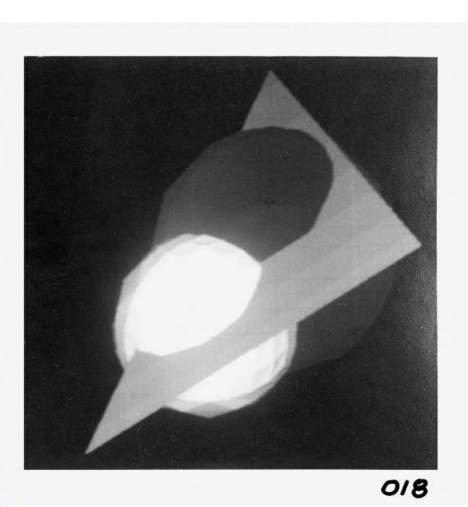
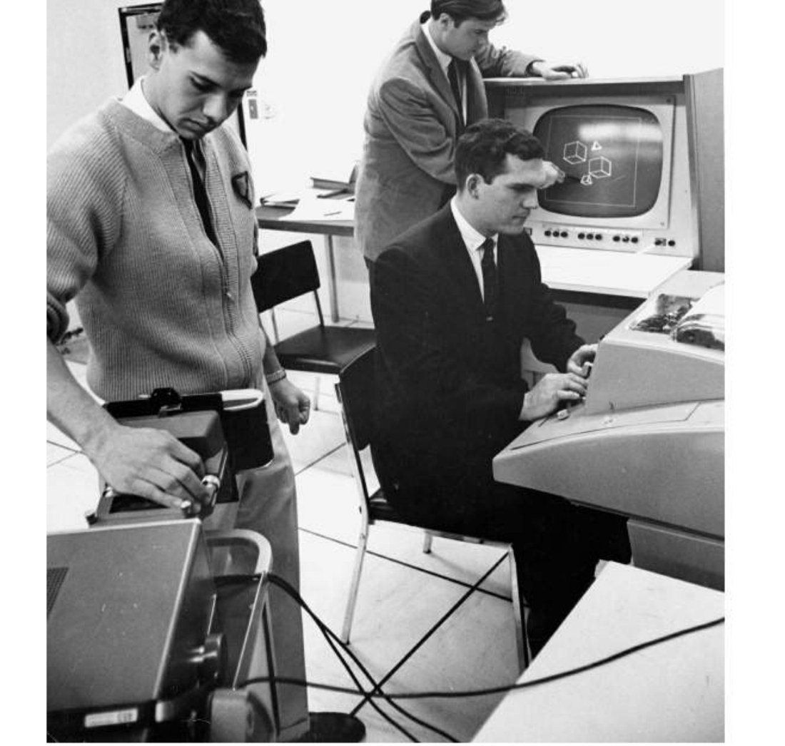
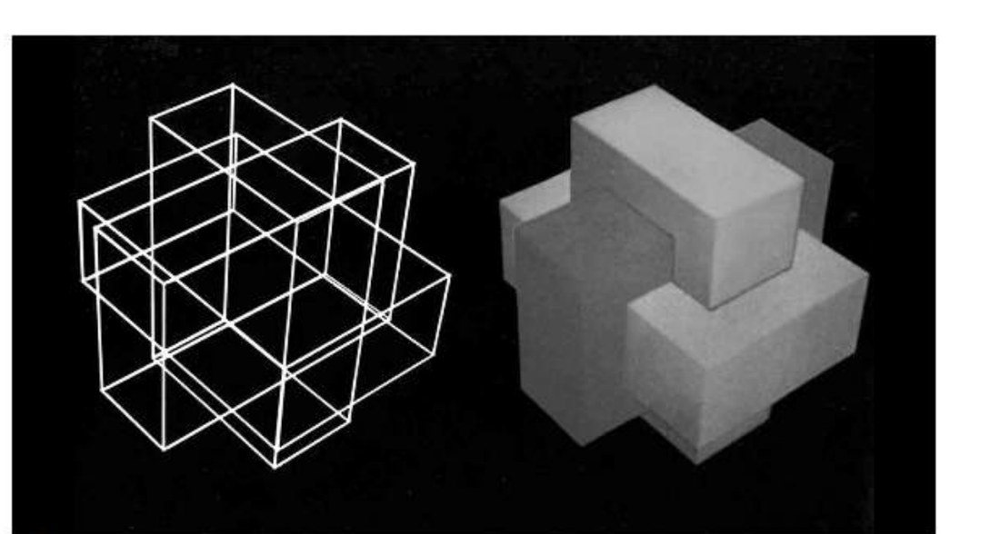
Edwin Catmull, lo z-buffer
Una memoria registra la distanza di ogni punto: per sapere che cosa sta davanti basta confrontare due numeri. Costosissimo all'inizio, poi standard. La mappa di profondità è un'immagine che esiste per il calcolo.
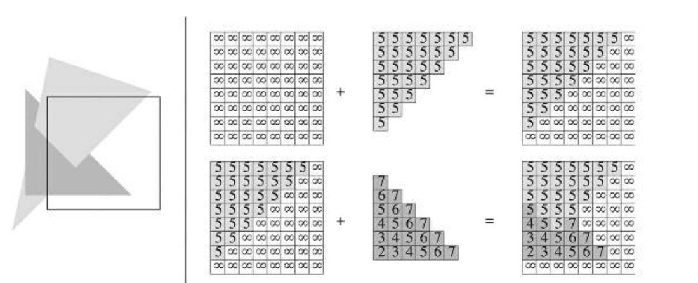
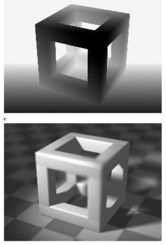
«it produces vision by constructing absence. Rather than capturing the world through the indexical trace of light on a surface, computer graphics simulates our knowledge of the world by constructing objects for visual interaction.»
Produce la visione costruendo un'assenza. Invece di catturare il mondo con la traccia della luce su una superficie, la computer grafica simula la conoscenza del mondo costruendo oggetti per l'interazione visiva.
Jacob Gaboury, 2015, p. 57; Image Objects, 2021
«The material logic of the digital image is not one of inscription but restriction, a making absent.»
La logica materiale dell'immagine digitale non è l'iscrizione ma la restrizione, un rendere assente.
Jacob Gaboury, Hidden Surface Problems, 2015, abstract
7Costruire o simulare: la biforcazione del 1974
Fino ai primi anni Settanta la stessa ricerca serve a progettare oggetti (CAD) e a simularne l'aspetto. Poi le strade si dividono.
«While computer-aided models for engineering and design are built to precise material specification, such that the model and object are mathematically identical, shading and other rendering techniques are developed to produce the illusion of a material effect [...], but do not necessarily reflect any underlying mathematical or material form.»
I modelli per l'ingegneria sono costruiti su specifiche materiali precise, e modello e oggetto sono matematicamente identici; lo shading e le altre tecniche di render producono l'illusione di un effetto materiale, senza riflettere necessariamente una forma matematica o materiale sottostante.
Jacob Gaboury, Image Objects, 2021
Dalla spline di legno alla curva di Bézier
Nei cantieri navali e aeronautici una curva si traccia con un listello flessibile, la spline, tenuto da pesi, le ducks. Pierre Bézier, alla Renault, la traduce in formula: i punti di controllo sono i pesi. Steven Coons la estende alle superfici.
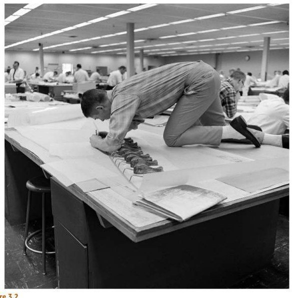
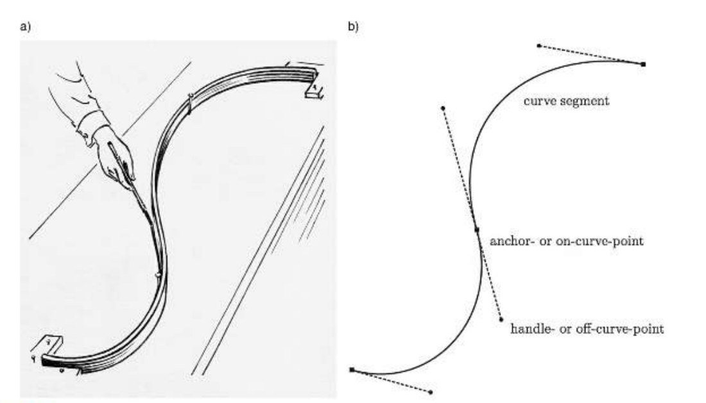
Flat, Gouraud, Phong
Flat: un tono per faccia. Henri Gouraud: la luce calcolata ai vertici e interpolata; l'occhio non vede più gli spigoli. Sutherland all'inizio è contrario, perché il metodo agisce sull'immagine e non sull'oggetto. Bui Tuong Phong: il calcolo per pixel e i riflessi. La cupola resta a facce piatte: sembra solo liscia.
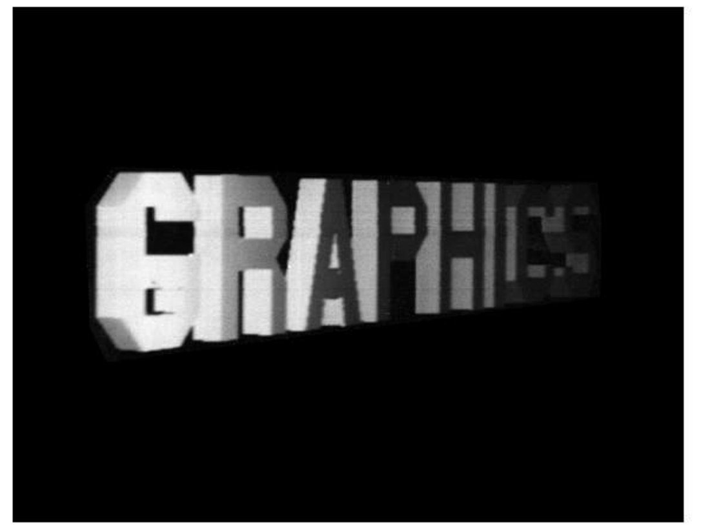
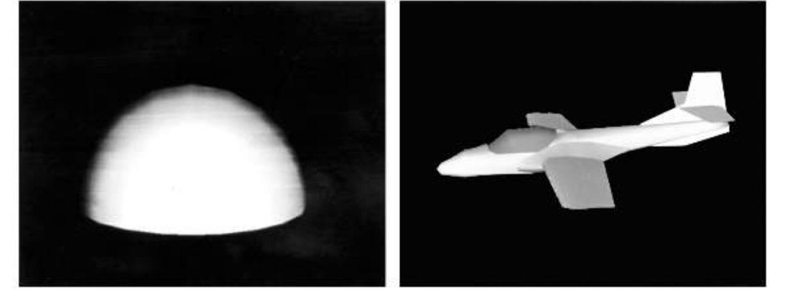
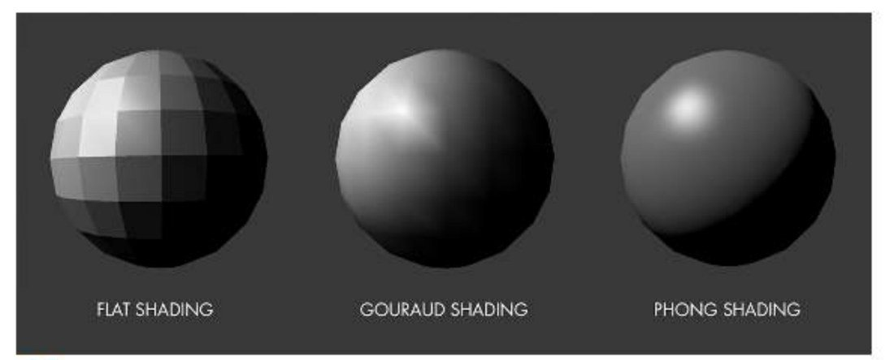
8Oggetti presi dal mondo
Primi anni Settanta: invece di sfere e cubi, si digitalizzano cose vicine. Per Gaboury il realismo della CG resta limitato all'aspetto visivo di un oggetto, staccato dalla sua struttura.
Il Maggiolino
L'auto di Marsha Sutherland, coperta di punti numerati e misurata a mano dagli studenti. Un guscio senza interno: il modello costa più dell'auto.
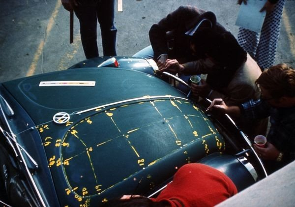
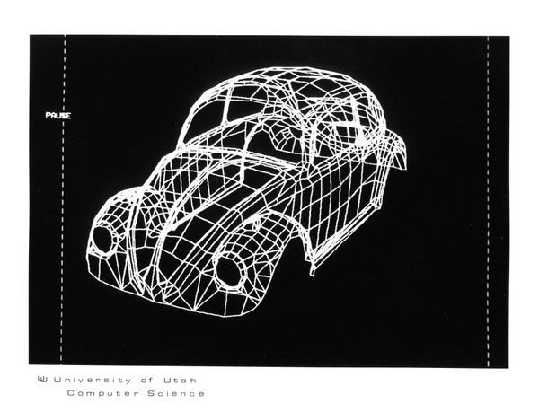
La mano di Catmull, i volti
Catmull digitalizza un calco in gesso della propria mano, coperto di circa 350 poligoni: con Fred Parke ne fa il primo film di animazione 3D ombreggiata. Gouraud digitalizza il volto della moglie Sylvie, Parke quello della moglie Vicky.
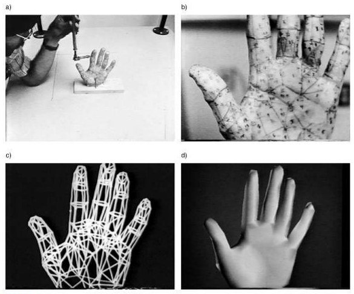
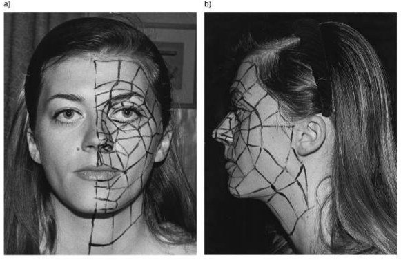
Martin Newell, la teiera dello Utah
Una Melitta di casa, disegnata su carta millimetrata. Senza fondo, non può contenere nulla. Diventa un oggetto di prova standard per gli algoritmi. Newell tratta ogni oggetto come istanza di un modello generale, come i software 3D di oggi.
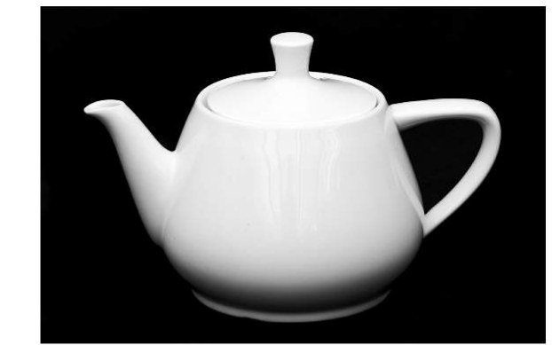
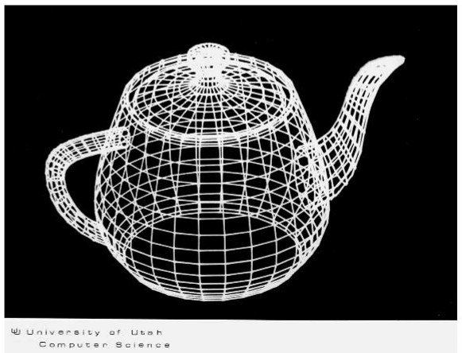
Futureworld
Film di Richard Heffron. La mano di Catmull e un volto di Parke compaiono sui monitor di una sala di controllo: il primo 3D in un lungometraggio.
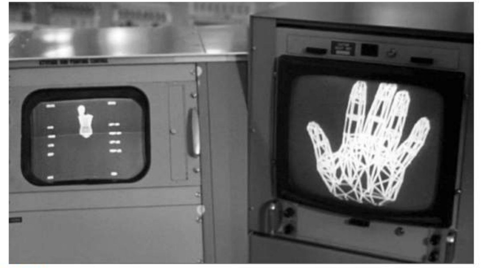
9Il realismo: disuguale e pagato
Il punto su cui i due autori sono d'accordo. Gaboury rimanda in nota ad Assembling Reality di Manovich.
Manovich, Assembling Reality
Si sa fare una faccia ma non i capelli, la plastica ma non la stoffa. I problemi risolti li scelgono i finanziatori: «the Pentagon and Hollywood». Paesaggi e nuvole per i simulatori di volo, personaggi per il cinema.
«The realism of computer animation is highly uneven, reflecting the range of problems which were addressed and solved.»
Il realismo dell'animazione al computer è molto disuguale: riflette i problemi che sono stati affrontati e risolti.
Lev Manovich, Assembling Reality, 1992
Manovich, tre livelli
«the visual culture of a computer age is cinematographic in its appearance, digital on the level of its material, and computational (i.e., software driven) in its logic.»
La cultura visiva dell'età del computer è cinematografica nell'aspetto, digitale nel materiale e computazionale, cioè guidata dal software, nella logica.
Lev Manovich, Computer Simulation and the History of Illusion, 1999
Manovich, Il linguaggio dei nuovi media
«Un dipinto del Rinascimento e un'immagine realizzata al computer utilizzano le stesse tecniche (una serie di segnali collocati coerentemente in profondità) per creare l'illusione di uno spazio, effettivo o immaginario. La vera rivoluzione è costituita dall'introduzione di un'immagine sintetica in movimento»
Lev Manovich, Il linguaggio dei nuovi media, Olivares, 2002, p. 233
«Perché ciò che viene simulato, ovviamente, non è la realtà vera, ma la realtà fotografica, così come la vede l'obiettivo della macchina fotografica.»
Lev Manovich, Il linguaggio dei nuovi media, p. 252
Gaboury, Image Objects
Nella computer grafica «realism is unequally distributed in any given simulation». Ciò che riproduce «is not the world but another medium in simulation»: la fotografia, il cinema.
10Dal laboratorio al mercato
Gli oggetti dello Utah finiscono in memorie, simulatori, film e chip.
Il frame buffer: Richard Shoup, SuperPaint
Allo Xerox PARC una memoria tiene ogni punto dello schermo, modificabile. Dal vettoriale al raster, cioè agli schermi a pixel.
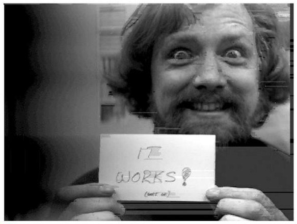
Simulatori di volo
Evans & Sutherland: la grafica in tempo reale, prima dei videogiochi. Per Manovich è la corsa al tempo reale che porta gli algoritmi dentro l'hardware.
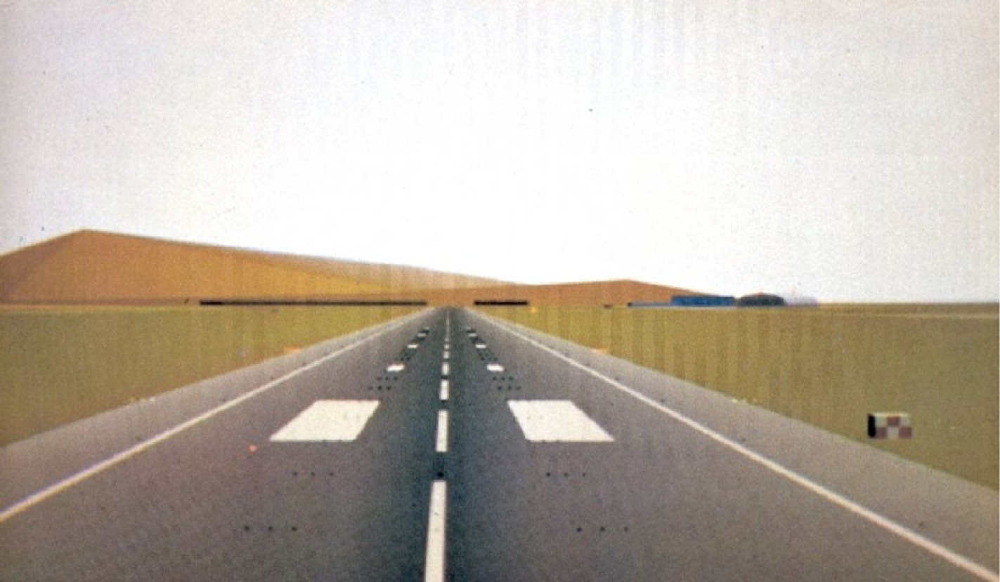
Tron · Silicon Graphics
Catmull entra alla Lucasfilm nel 1979. James Clark, dottorato allo Utah, progetta il Geometry Engine e fonda Silicon Graphics. Per Manovich è il secondo stadio dell'automazione: la prospettiva incisa nel silicio.
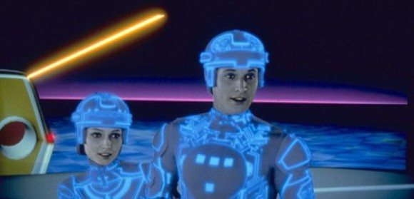
Jurassic Park
ILM, con Softimage. Circa quattro minuti di dinosauri al computer. La CG entra nella cultura di massa.
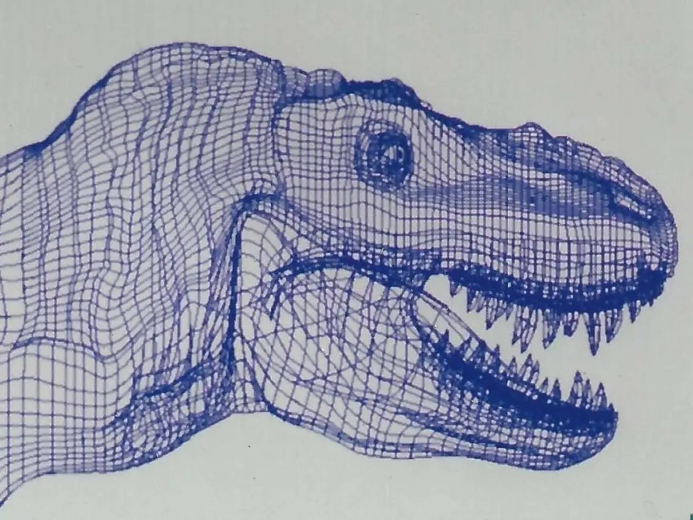
11L'image object
Lo stesso file CAD produce il divano in fabbrica e la sua «fotografia» nel catalogo. Immagine e oggetto non si separano più.
«computational images are not pictures of the things they represent; they are pictures of the world that produced them, and they execute a theory of that world in the world.»
Le immagini computazionali non sono immagini delle cose che rappresentano: sono immagini del mondo che le ha prodotte, ed eseguono nel mondo una teoria di quel mondo.
Jacob Gaboury, Image Objects, 2021, introduzione
- Oltre il 75% delle immagini di prodotto del catalogo IKEA è generato al computer.
- Artie Vierkant, Image Objects (dal 2011): sculture che sembrano uscite da un programma di grafica, fotografate e poi alterate digitalmente. Con questa serie si chiude il libro di Gaboury.
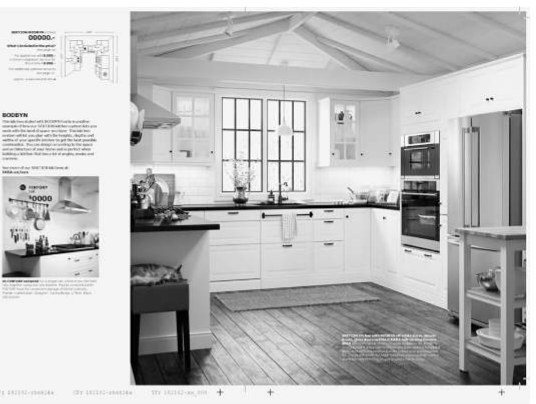
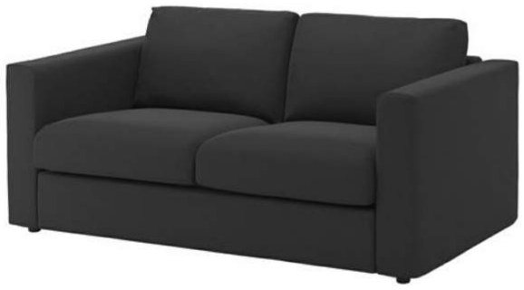
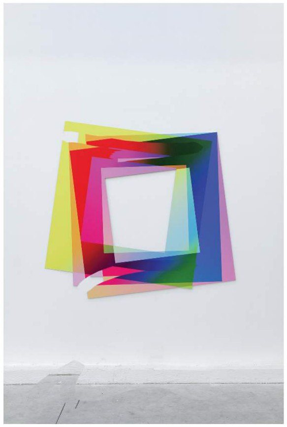
12Il confronto
Il disaccordo non è sui fatti, ma su dove mettere la rottura.
| Fonte o caso | Manovich | Gaboury |
|---|---|---|
| Lacan: la prospettiva come mappatura dello spazio | La prospettiva va oltre la vista: radar e sonar sono «visione geometrica». Continuità | La prospettiva è una tecnica tra tante: la CG la usa, non ne dipende |
| Ivins: la relazione metrica | Strumento di misura e di controllo, che il computer porta a termine | Una soluzione possibile al problema della relazione tra oggetti |
| Roberts, 1963 | Matematica prospettica dell'Ottocento; grafica e visione artificiale nascono insieme | La prospettiva entra con la fotografia; lo scopo era la visione artificiale |
| SAGE | Nasce lo schermo interattivo, che agisce sulla realtà | Immagini come simboli di dati |
| Boeing, anni Sessanta | Disegni colorati a mano: continuità con l'animazione | Boeing Man: un oggetto simulato, una teoria del mondo |
| La rottura | Tardi, nel rapporto con l'utente: immagine sintetica in movimento, interattività in tempo reale | All'inizio, nella struttura: il mondo come insieme di oggetti calcolabili |
«a narrative of inheritance across visual media that obscures a detailed historical account of computer graphics as computational ab initio»
Una narrazione di eredità tra media visivi, che oscura una storia dettagliata della computer grafica come computazionale fin dall'inizio.
Gaboury su Manovich, Image Objects, 2021
«the simulation of perspective is better suited to a genealogy of simulation, not one of perspective.»
La simulazione della prospettiva appartiene a una genealogia della simulazione, non a una genealogia della prospettiva.
Jacob Gaboury, Hidden Surface Problems, 2015, p. 46
Fonti
- Lev Manovich, «Real» Wars (1991), Assembling Reality (1992), The Mapping of Space: Perspective, Radar, and 3-D Computer Graphics (1993), Archeology of a Computer Screen (1995), Automation of Sight (1997), Computer Simulation and the History of Illusion (1999), raccolti in All Articles 1992-2007.
- Lev Manovich, Il linguaggio dei nuovi media, Olivares, 2002 (ed. orig. MIT Press, 2001).
- Jacob Gaboury, Hidden Surface Problems: On the Digital Image as Material Object, Journal of Visual Culture 14/1, 2015, pp. 40-60.
- Jacob Gaboury, Image Objects: An Archaeology of Computer Graphics, MIT Press, 2021.
- Bruno Latour, Visualisation and Cognition: Drawing Things Together, Knowledge and Society 6, 1986.
- William M. Ivins Jr., On the Rationalization of Sight, Metropolitan Museum of Art Papers 8, 1938.
- J. C. R. Licklider, Man-Computer Symbiosis, 1960.
- Immagini di Wikimedia Commons con la licenza indicata in didascalia; figure di Image Objects con il numero di figura.